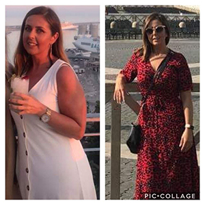
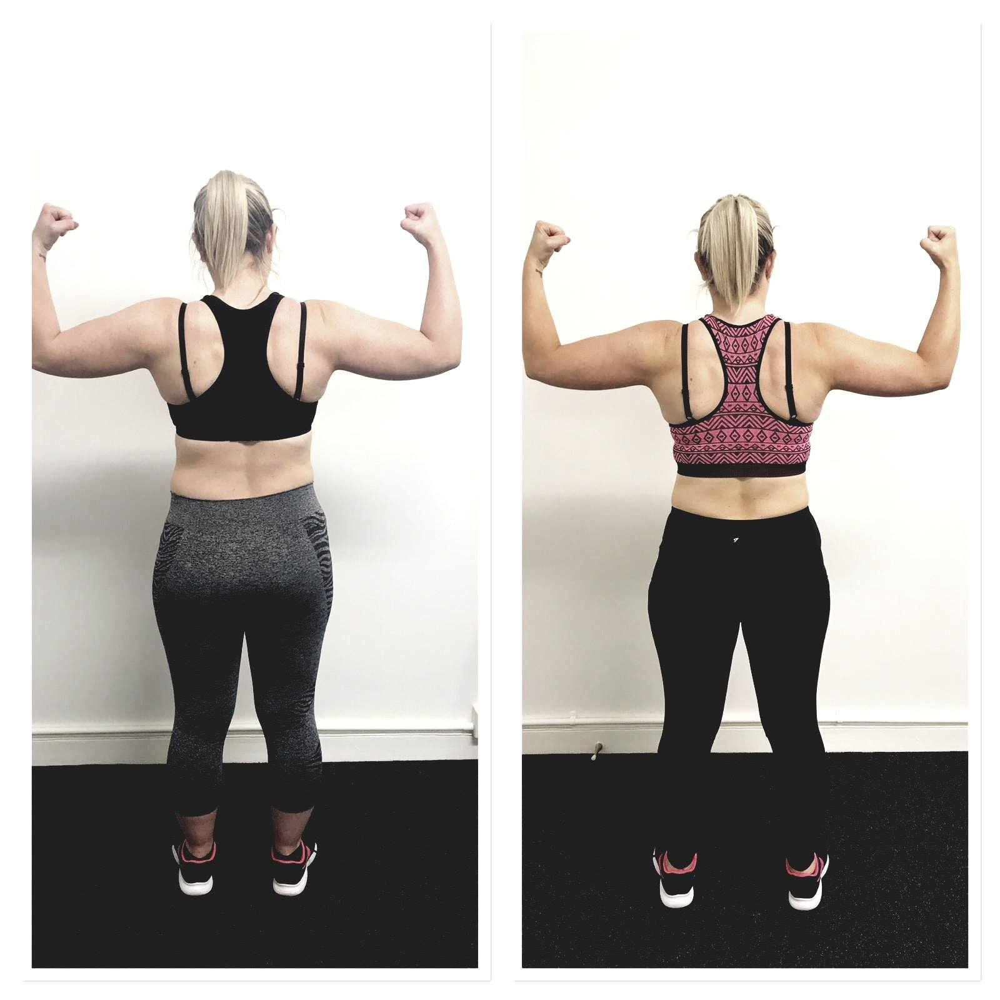
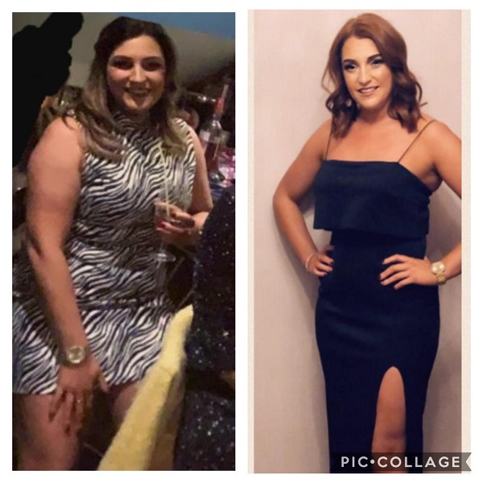

Success Stories
Celebrating our amazing clients.
A collection of success stories from our clients, showing just what a difference Elizabeth Hylands Personal Training has made to their lives.
Catherine McGrath
So proud of my lovely PT Client, Catherine, who first came on with us through Boot Camp one year ago. She did brilliantly well during the 6 weeks, and lost -18 inches. After which, she joined as a Member and continued to grow in strength and fitness.
In September she came on with me as a PT Client and took part in the 15 Week Challenge. The other 2 ladies in her PT group were a brilliant support, and really rallied behind Catherine as week after week she continued to progress in every way. Catherine lost 17 inches during the Challenge and a total of 17.8lbs! This was with a few trips away and other events thrown into the mix. Around this she worked really hard to plan her meals and stay consistent in her nutrition. As a result she came 6th in the Challenge 🎉And in her One Rep Max Squat Test before Christmas she achieved a ORM of 107.5kg. Outstanding!
Catherine has lost a total of -3.5 off her arms, -3 inches off her chest, -4 inches off her waist, -6.5 inches off her belly button, -3 inches off her hips and a massive 10 inches off both legs!
Catherine's Review after the 15 Week Challenge 👇
"I’ve been a member at Cura almost 1 year now. My goals when joining were to lose weight, get fit and find something that I enjoy so that I can stick with! During this time I am happy to say I have achieved all 3 goals.
When Liz announced the 15 week challenge I was definitely keen to take part. This was the extra push and motivation that I needed after enjoying the summer 😊
During these 15 weeks there were many challenges, between holidays and weekends away. Liz was always on hand offering support and guidance at any time it was needed, night or day. Whether it was suggestions on food options, and just the general encouragement that I needed. Liz also went out of her way to accommodate any weigh-ins/measurements, always at a time suitable for me even when she was not due to be working. I don’t know of anywhere else you would get this level of commitment."
So proud of you and what you have achieved, Catherine, and I know will continue to achieve in 2020!
Sarah McCahon


Unbelievable what can be achieved in 13 weeks when you set your mind to it.
With holidays, nights out etc, Sarah didn't let those stop her from working towards her goals, and the photos below show how hard she has worked. When she had set backs, it made her more determined to work harder the next week - such a positive mental attitude to have.
-10.5 inches off in 13 weeks, plus 5 lbs off, and a reduction in body fat from 42.8% to 40.6%.
This was achieved by focusing on getting her eating right, and upping her game to include one Group Personal Training session per week with me, and the motivation of 2 other ladies, plus attended my recommended classes.
Her strength has steadily improved week after week and very kindly with permission she is letting me share her progress with everyone. She even messaged me to tell me how much she has loved the PT sessions, despite how tough it has been.
Well done Sarah!! Keep focused, and celebrate your awesome achievement. You are an inspiration to all of us!
Liz
Kirsty Wilson

Kirsty says:
"I joined Cura in Oct 2018 wanting to make a change to my lifestyle and Cura was the perfect place. I love that the classes are a really comfortable, friendly atmosphere and the instructors are fab, always motivating and pushing me to push myself.
Liz has been great helping me, even though I stress her sometimes with my weekends out (!!)) but with her support and help I’ve been able to achieve my goals and have had amazing results."